Preveja o futuro com Python
Uma introdução prática ao treinamento de modelos de machine learning.
Professor: Jaime Teixeira - @jaimejrs
Transformar dados de navegação em um primeiro modelo de ML
Ambiente: Google Colab
Dataset: Online Shoppers Intention
Bibliotecas: Pandas e Scikit-Learn
Por que Python virou padrão na área de dados?
O Insight Lab/UFC destaca Python como uma linguagem flexível, aberta, fácil de aprender e apoiada por bibliotecas fortes para análise, visualização e Machine Learning.
Fácil de usar
A sintaxe reduz a barreira de entrada e ajuda iniciantes a focar no raciocínio, não só na linguagem.
Código aberto
A comunidade cria, compartilha e melhora ferramentas que aceleram projetos de dados.
Bibliotecas
Pandas, Matplotlib, Seaborn e Scikit-Learn cobrem da tabela ao primeiro modelo.
Integração
Python se conecta bem a ambientes existentes e funciona em diferentes etapas da Ciência de Dados.
Base: Insight Lab/UFC, "Por que o Python é a Linguagem mais adotada na área de Data Science?"
Big Data: quando escala vira o problema
Big Data não é um modelo. É o conjunto de práticas e tecnologias para lidar com dados grandes, rápidos, variados e difíceis de processar em ferramentas comuns.
Volume
Muitos dados: logs, transações, sensores, documentos, imagens e arquivos acumulados.
Velocidade
Dados chegando continuamente, muitas vezes perto do tempo real.
Variedade
Tabelas, textos, imagens, JSONs, documentos e dados semiestruturados.
Infraestrutura
Armazenar, distribuir, processar e disponibilizar dados para análise.
Inteligência Artificial: sistemas que aprendem padrões
IA é o guarda-chuva maior. Dentro dela, Machine Learning aprende com dados; dentro de ML, Deep Learning usa redes profundas; e LLMs são uma família importante dentro de Deep Learning.
IA
Campo amplo de sistemas com comportamento inteligente em tarefas específicas.
Machine Learning
Subárea da IA em que sistemas aprendem padrões a partir de dados.
Deep Learning
Subárea de ML baseada em redes neurais profundas.
LLMs
Modelos de linguagem treinados para processar e gerar texto.
Como grandes empresas utilizam ML
Analisa histórico de visualização, hábitos de uso e horários para recomendar conteúdos e personalizar miniaturas exibidas na tela.
Usa ML para prever demanda de estoque, ajustar preços dinâmicos e alimentar o sistema de recomendação de produtos.
Aplica modelos preditivos para estimar chegada, definir preços por oferta e demanda e analisar dados de segurança das viagens.
Cria playlists personalizadas, como Discover Weekly, usando padrões de audição e filtragem colaborativa entre milhões de usuários.
Marco histórico em que uma IA venceu o campeão mundial de Go usando aprendizado por reforço profundo e autojogo para aprender estratégias inéditas.
Diferença entre algoritmo e modelo
Algoritmo
É o procedimento matemático. Uma Árvore de Decisão sabe dividir dados por perguntas, mas ainda não conhece nenhum fenômeno real.
Modelo
É o resultado depois do treinamento. O algoritmo passa a carregar padrões aprendidos a partir de exemplos.
Três jeitos de uma máquina aprender
Supervisionado
Tem resposta conhecida: cada exemplo vem acompanhado de um rótulo ou valor esperado.
Não supervisionado
Não tem resposta certa. O algoritmo procura grupos parecidos.
Reforço
Um agente aprende por tentativa, erro e recompensa.
| Tipo | Pergunta | Exemplo conceitual |
|---|---|---|
| Classificação | Qual categoria? | Aprovar ou reprovar, positivo ou negativo, classe A ou classe B. |
| Clusterização | Quais grupos existem? | Grupos de clientes, produtos ou registros parecidos. |
| Regressão | Qual valor numérico? | Preço, demanda, tempo ou qualquer valor contínuo. |
Aprendizado supervisionado: quando já temos a resposta
O modelo aprende a partir de exemplos em que a resposta correta já está marcada.
Classificação
Usamos quando a resposta esperada é uma categoria.
A pergunta típica é: a qual classe este registro pertence?
Regressão
Usamos quando a resposta esperada é um valor numérico contínuo.
A pergunta típica é: qual valor devemos estimar?
Árvore de Decisão
Algoritmo supervisionado que aprende uma sequência de perguntas para separar exemplos e chegar a uma previsão.
Como funciona
Divide os dados em ramos. Cada divisão tenta separar melhor os exemplos de acordo com uma variável.
Uso real
Exemplo real: triagem de crédito. A árvore usa dados como renda, atrasos anteriores e uso do limite para apoiar aprovações ou revisões manuais.
Atenção
Lida relativamente bem com outliers em variáveis numéricas, porque usa cortes. Ainda assim, árvores profundas podem memorizar exceções e ruído.
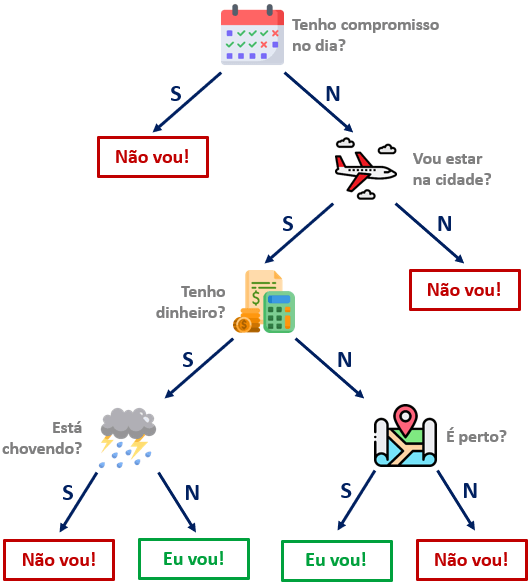
Random Forest Classifier
Modelo de classificação que combina várias árvores de decisão para produzir uma previsão mais estável.
Como funciona
Treina muitas árvores com variações dos dados e das variáveis. A classe final vem por votação.
Uso real
Exemplo real: detecção de fraude em cartão. Várias árvores votam se uma transação parece normal ou suspeita usando valor, horário, local e histórico.
Atenção
Costuma ser mais robusto a outliers e ruído que uma única árvore, mas perde transparência. Rótulos errados ainda podem atrapalhar.
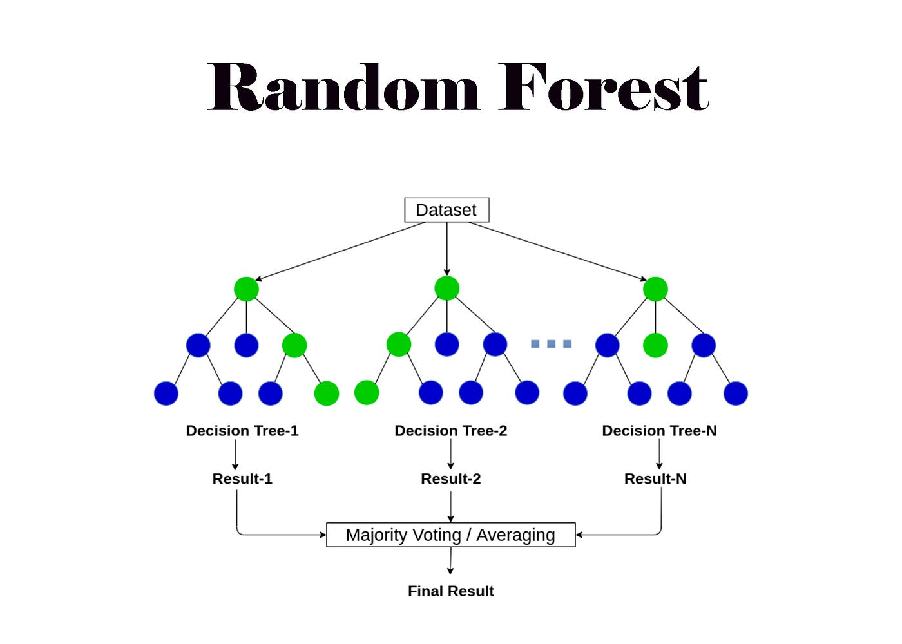
KNN: K-Nearest Neighbors
Algoritmo baseado em proximidade: a previsão vem dos exemplos mais parecidos com o novo caso.
Como funciona
Calcula distâncias entre registros. Os K vizinhos mais próximos influenciam a previsão.
Uso real
Exemplo real: recomendação por similaridade. Um e-commerce sugere produtos olhando clientes ou itens parecidos com o caso atual.
Atenção
É sensível a escala, ruído e outliers, porque tudo depende de distância. Normalizar variáveis costuma ser essencial.
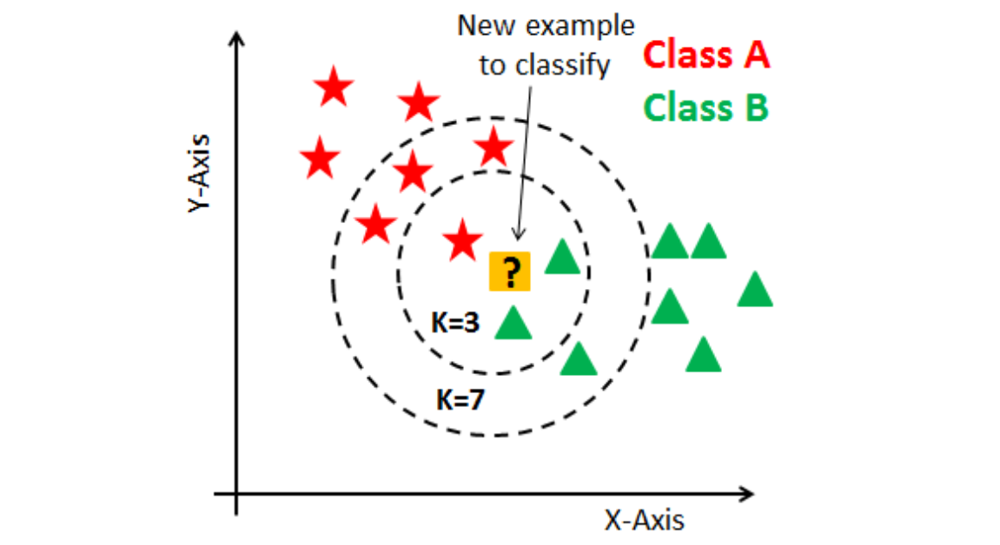
SVM: Support Vector Machine
Algoritmo supervisionado que procura o hiperplano ótimo: a fronteira que separa classes com a maior margem possível.
Como funciona
Encontra uma fronteira chamada hiperplano. O hiperplano ótimo maximiza a margem entre as classes usando os vetores de suporte.
Uso real
Exemplo real: classificação de documentos ou imagens simples, separando categorias com uma fronteira bem definida entre os exemplos.
Atenção
É sensível à escala e a outliers próximos da fronteira. Normalização e ajuste de margem, kernel e C fazem diferença.
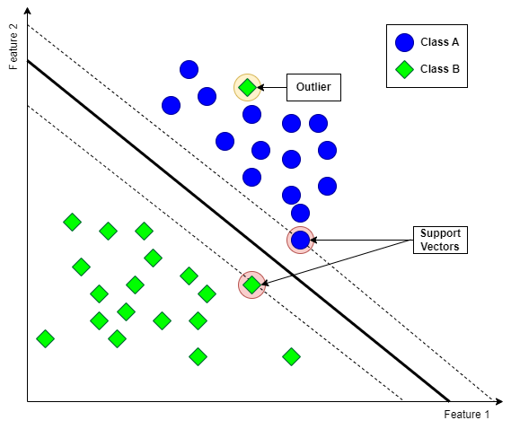
Regressão Logística
Apesar do nome, é um algoritmo de classificação usado para estimar a probabilidade de uma classe.
Como funciona
Calcula uma combinação das variáveis e transforma o resultado em probabilidade entre 0 e 1.
Uso real
Exemplo real: previsão de churn. O modelo estima a probabilidade de um cliente cancelar o serviço no próximo mês.
Atenção
É sensível a outliers e a variáveis muito correlacionadas. Normalização e revisão de extremos ajudam a tornar a leitura mais confiável.
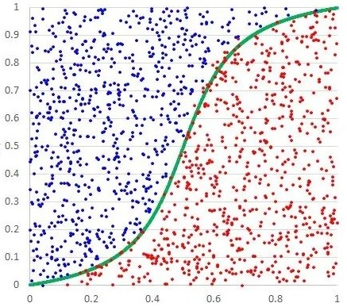
Naive Bayes
Algoritmo probabilístico: "Naive" indica a suposição simplificadora de independência; "Bayes" vem do Teorema de Bayes.
Como funciona
Calcula a probabilidade de cada classe a partir das evidências observadas, combinando probabilidades condicionais.
Uso real
Exemplo real: filtro de spam. O modelo usa palavras do e-mail para estimar se a mensagem é spam ou legítima.
Atenção
A suposição de independência raramente é perfeita. Em texto é robusto; em versões gaussianas, outliers numéricos podem distorcer probabilidades.
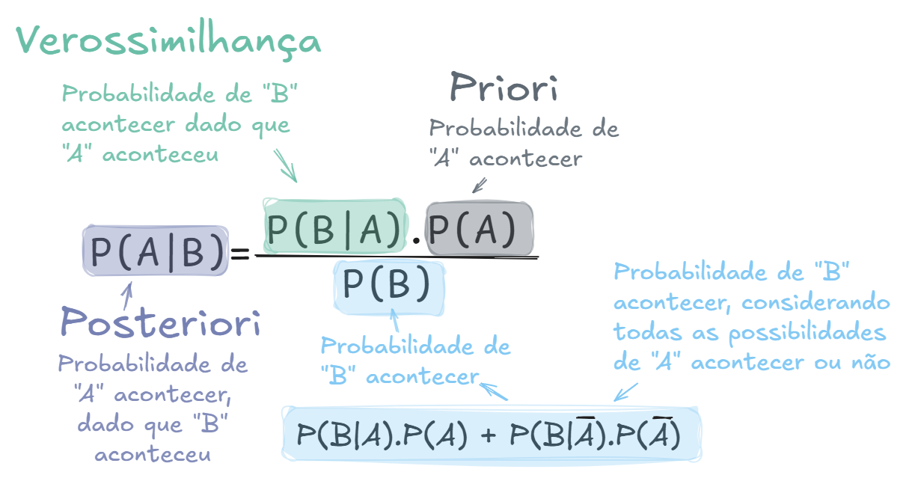
Regressão Linear
Modelo supervisionado usado para prever valores numéricos a partir de uma combinação linear das variáveis.
Como funciona
Ajusta uma linha ou plano que reduz o erro entre valores previstos e valores observados.
Uso real
Exemplo real: estimar preço de imóvel usando metragem, localização, quartos e idade do imóvel quando a relação é aproximadamente linear.
Atenção
Tem dificuldade com relações muito não lineares e é bastante sensível a outliers, porque pontos extremos podem puxar a reta.
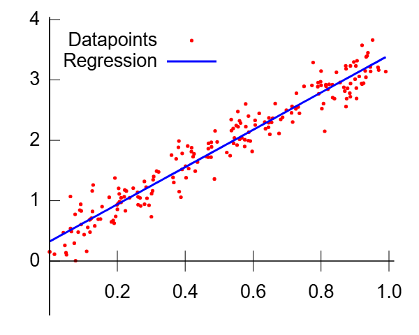
Random Forest Regressor
Modelo de regressão que combina várias árvores para prever valores numéricos com mais estabilidade.
Como funciona
Cada árvore estima um valor. A previsão final costuma ser a média das previsões das árvores.
Uso real
Exemplo real: previsão de demanda. Redes varejistas estimam vendas por loja considerando preço, calendário, estoque e histórico.
Atenção
É mais robusto que regressão linear para relações não lineares, mas valores extremos no alvo ainda podem influenciar a média das árvores.
XGBoost
XGBoost significa eXtreme Gradient Boosting: um conjunto de árvores treinadas em sequência para corrigir erros e ganhar performance em dados tabulares.
Como funciona
Constrói árvores pequenas em sequência. Cada nova árvore tenta corrigir os erros residuais do conjunto anterior.
Uso real
Exemplo real: score de risco. Bancos e fintechs usam XGBoost em dados tabulares para estimar inadimplência, fraude ou propensão de compra.
Atenção
É poderoso, mas pode sobreajustar. Ruído e outliers podem pesar; por isso usamos regularização, learning_rate, profundidade e amostragem.
Quando não temos resposta pronta: grupos, anomalias e recompensa
Clusterização
Agrupa exemplos parecidos sem receber uma resposta correta.
Detecção de anomalias
Procura comportamentos fora do padrão. Exemplo: Isolation Forest.
Reforço
Um agente aprende por tentativa, erro e recompensa, ajustando decisões ao longo do tempo.
| Paradigma | Resposta conhecida? | Uso típico |
|---|---|---|
| Supervisionado | Sim | Prever categorias, riscos, eventos ou valores. |
| Não supervisionado | Não | Segmentar registros ou detectar padrões incomuns. |
| Reforço | Recompensa | Aprender uma sequência de decisões. |
Clusterização Hierárquica
Técnica que organiza registros em uma hierarquia de grupos, do mais específico ao mais geral.
Como funciona
Vai juntando registros ou grupos parecidos até formar uma estrutura em árvore chamada dendrograma.
Uso real
Exemplo real: segmentação de clientes. A empresa observa grandes grupos de comportamento e depois subgrupos, como frequentes, ocasionais e sensíveis a preço.
Atenção
Pode ficar pesada em bases grandes. É sensível a outliers, que podem virar grupos isolados, e à métrica de distância escolhida.
DBSCAN
Algoritmo de clusterização baseado em densidade: grupos aparecem onde há muitos pontos próximos.
Como funciona
Procura regiões densas e separa pontos isolados como ruído ou possíveis exceções.
Uso real
Exemplo real: geolocalização. Agrupa corridas, entregas ou ocorrências por densidade no mapa e separa pontos isolados como ruído.
Atenção
Lida bem com outliers ao marcá-los como ruído, mas depende de distância e densidade. Sofre quando as densidades variam muito.
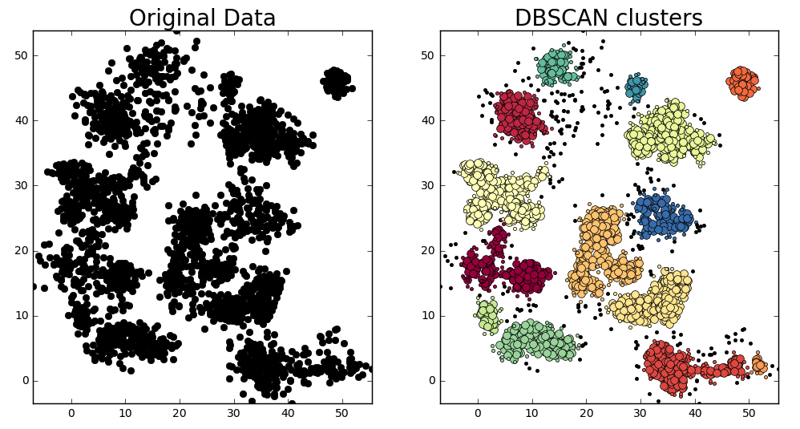
PCA: Análise de Componentes Principais
Técnica de redução de dimensionalidade que resume muitas variáveis em poucos componentes informativos.
Como funciona
Cria novas variáveis que concentram a maior parte da variação presente nos dados originais.
Uso real
Exemplo real: visualizar clientes descritos por muitas variáveis. O PCA reduz dezenas de colunas para dois componentes e facilita enxergar padrões.
Atenção
É sensível à escala e a outliers. Padronização e revisão de extremos são importantes antes de interpretar componentes.
Isolation Forest
Algoritmo usado para detectar anomalias, procurando registros que se separam facilmente do restante.
Como funciona
Cria várias árvores aleatórias. Pontos isolados tendem a ser separados com poucas divisões.
Uso real
Exemplo real: monitoramento industrial. Sensores com leituras muito diferentes do padrão podem indicar falha de máquina ou manutenção urgente.
Atenção
Foi feito para encontrar outliers/anomalias, mas detecta diferença, não prova problema. Toda anomalia precisa de contexto.
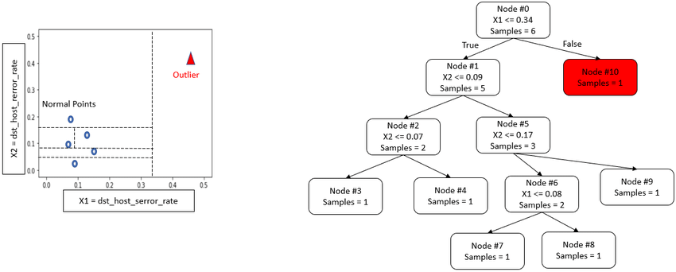
Apriori
Algoritmo usado para descobrir associações frequentes entre itens ou eventos que aparecem juntos.
Como funciona
Procura combinações frequentes e transforma essas combinações em regras do tipo “se A, então B”.
Uso real
Exemplo real: cesta de supermercado. Descobrir que quem compra pão e queijo também tende a comprar café ajuda em promoções e layout.
Atenção
Não lida com outliers numéricos; trabalha com frequência. Itens raros podem sumir se o suporte mínimo for alto demais.
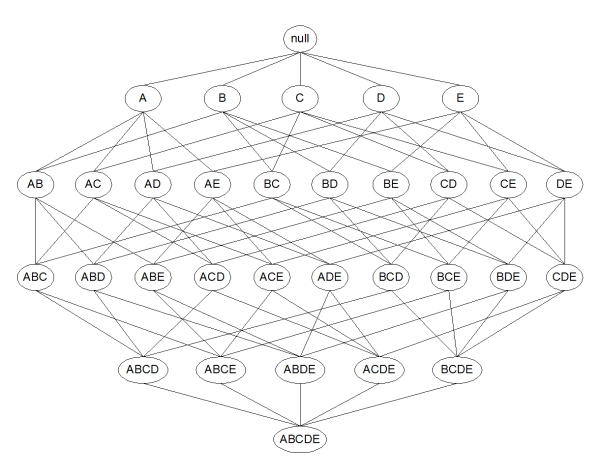
Conhecendo o dataset: Online Shoppers Intention
Cada linha representa uma sessão de navegação em um e-commerce. As colunas descrevem o que a pessoa acessou, por quanto tempo, em qual contexto e se a visita terminou em compra.
12.330
sessões de navegação registradas.
17 + 1
variáveis de entrada e um alvo: Revenue.
15%
das sessões terminaram em compra.
Fonte: Kaggle / UCI Machine Learning Repository, dataset Online Shoppers Intention.
Colunas 1/3: navegação no site
Essas colunas mostram quais tipos de página foram acessados e quanto tempo o visitante passou em cada grupo.
| Coluna | Significado |
|---|---|
Administrative |
Quantidade de páginas administrativas visitadas na sessão. |
Administrative_Duration |
Tempo gasto em páginas administrativas, como conta, cadastro ou políticas do site. |
Informational |
Quantidade de páginas informativas acessadas. |
Informational_Duration |
Tempo gasto em páginas informativas, como ajuda, conteúdo institucional ou detalhes gerais. |
ProductRelated |
Quantidade de páginas relacionadas a produtos visitadas. |
ProductRelated_Duration |
Tempo gasto nas páginas de produtos durante a sessão. |
Colunas 2/3: sinais de comportamento
Essas métricas resumem qualidade da navegação, valor gerado pelas páginas e contexto de datas especiais.
| Coluna | Significado |
|---|---|
BounceRates |
Percentual de visitantes que entram por uma página e saem sem realizar outra ação. |
ExitRates |
Percentual de visualizações que terminam naquela página específica. |
PageValues |
Valor médio associado às páginas visitadas antes da conclusão de uma transação. |
SpecialDay |
Proximidade da sessão com datas especiais ou feriados que podem aumentar compras. |
PageValues alto costuma sugerir maior intenção de compra.Colunas 3/3: contexto, tecnologia e alvo
Essas colunas situam a sessão no tempo, no perfil do visitante, na origem do tráfego e definem a resposta que o modelo aprende.
| Coluna | Significado |
|---|---|
Month |
Mês em que a sessão ocorreu. |
OperatingSystems |
Sistema operacional usado pelo visitante, representado por um número. |
Browser |
Navegador usado pelo visitante, representado por um número. |
Region |
Região do visitante, representada por um número. |
TrafficType |
Tipo ou origem do tráfego que levou o visitante ao site. |
VisitorType |
Perfil do visitante: novo, recorrente ou outro. |
Weekend |
Indica se a sessão aconteceu em um fim de semana. |
Revenue |
Indica se houve compra: True para compra e False para não compra. |
Como podemos prever se uma sessão de e-commerce terminará em compra?
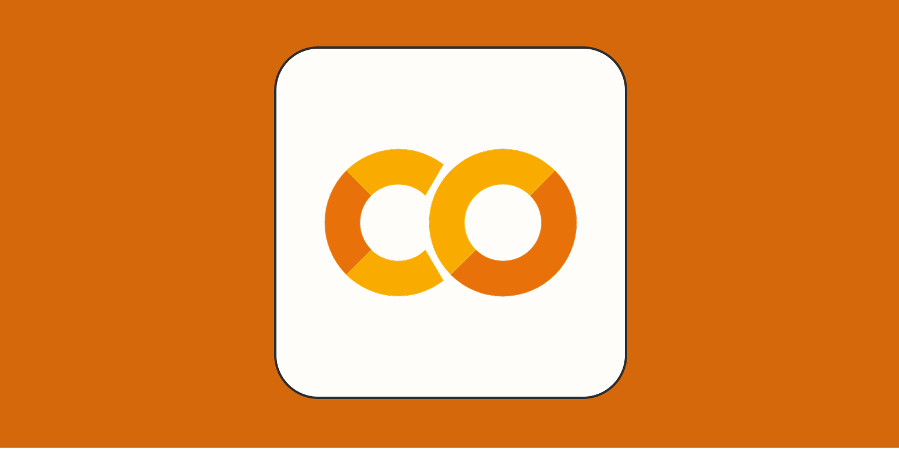